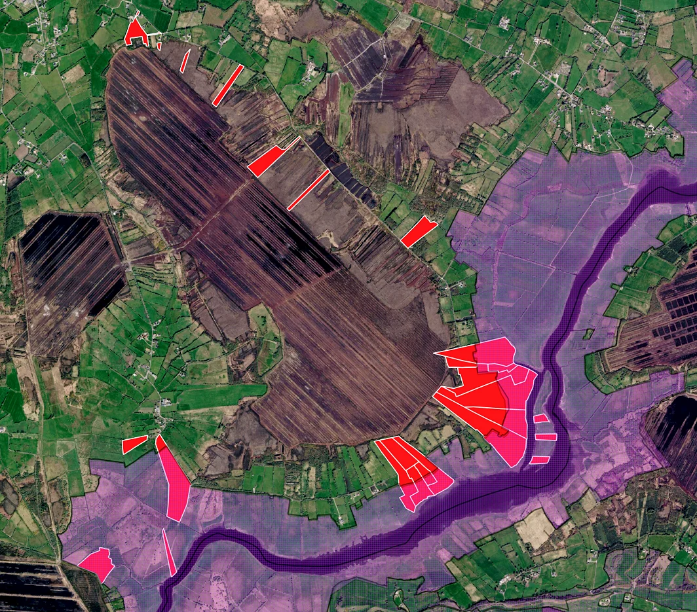

Natura 2000
A European Network of Protected Sites
Natura 2000 is the European Union's network of protected areas, established to conserve important habitats and wildlife. It includes Special Areas of Conservation (SACs), protected under the EU Habitats Directive, and Special Protection Areas (SPAs), protected under the Birds Directive. The network extends across all 27 EU Member States, covering nearly one-fifth of the EU's land area.
Natura 2000 recognises that conservation often depends on people working together. Many designated sites remain privately owned and continue to support farming and other activities compatible with protecting their habitats and species.
Natura 2000 at Cornafulla
Cornafulla Micro Reserve works across Cornafulla Bog and the adjoining Shannon Callows. Ten participating landowners have agreed to biodiversity monitoring and conservation activities across 225 acres of privately owned land. Of this, 114 acres — slightly more than half — lie within the Natura 2000 network.
The participating land includes parts of two European protected sites:
• River Shannon Callows Special Area of Conservation (SAC 000216) protects habitats including wet meadows, alkaline fens and alluvial woodland, as well as the Otter.
• Middle Shannon Callows Special Protection Area (SPA 004096) protects important wetland and bird habitats, including those supporting Whooper Swans, Golden Plover, Lapwing, Corncrake and other waterbirds.
Cornafulla Bog and the Shannon Callows form a connected landscape of peatland, wetlands, grasslands and seasonally flooded fields. Understanding the relationship between these habitats is an important part of Cornafulla Micro Reserve's work.

Peatlands, Wetlands and Climate Change
On 25 March 2026, the European Commission published new guidance on adapting Natura 2000 sites to climate change. It recognises the importance of healthy peatlands and wetlands for biodiversity, carbon storage and climate resilience, and encourages cooperation between environmental organisations, landowners and other stakeholders.
The guidance also supports restoring degraded habitats, managing the effects of climate change and developing partnerships that respond to local environmental conditions.
For Cornafulla, these priorities underline the importance of understanding peatland hydrology, recording changes in habitats and wildlife, and working with landowners across both designated and adjoining lands.
Our Contribution
Cornafulla Micro Reserve brings landowners, volunteers, researchers and local communities together to develop knowledge of Cornafulla Bog and the Shannon Callows.
Our activities include bird and wildlife monitoring, plant surveys, peat-depth measurements, mapping, research collaborations and public engagement. Participation in the International Swan Census and the Irish Wetland Bird Survey contributes local observations to wider monitoring efforts.
Landowner participation is voluntary. Agreements support monitoring and conservation activities while landowners retain ownership and control of their property. They do not create general public access rights.
Through this practical work, Cornafulla Micro Reserve contributes to understanding a landscape that is locally valued and forms part of Europe's wider network of protected habitats and species.
Further Information
European Commission – Natura 2000 European Commission – Adapting Natura 2000 to climate change, 25 March 2026 NPWS – River Shannon Callows SAC NPWS – Middle Shannon Callows SPA